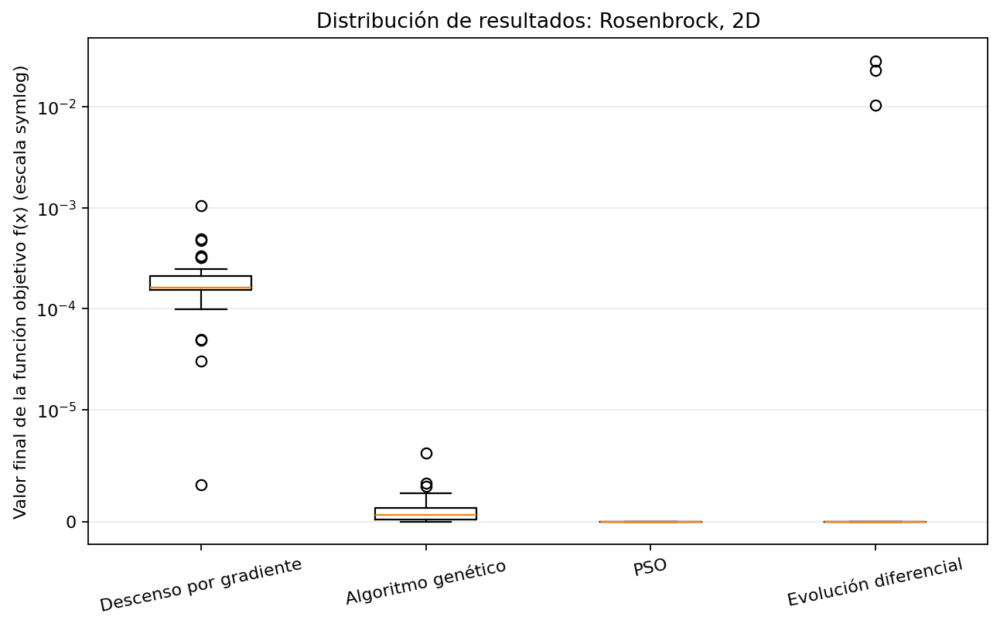
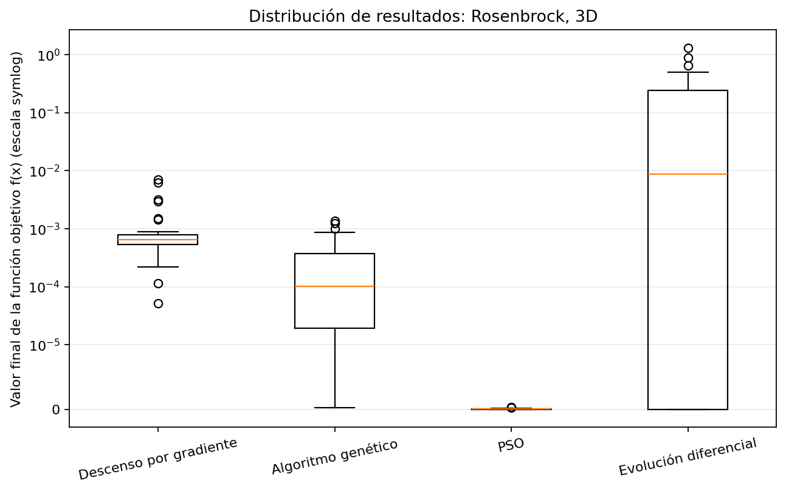
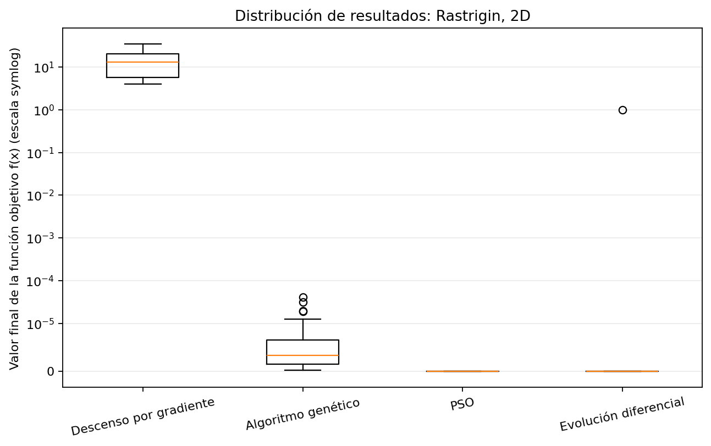
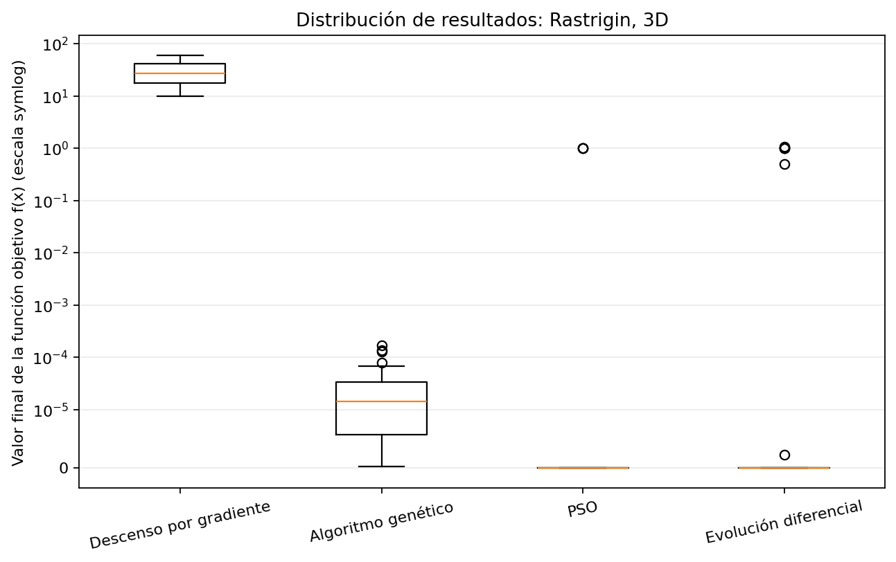
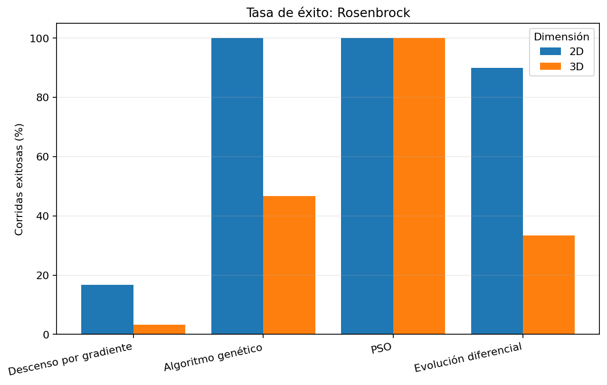
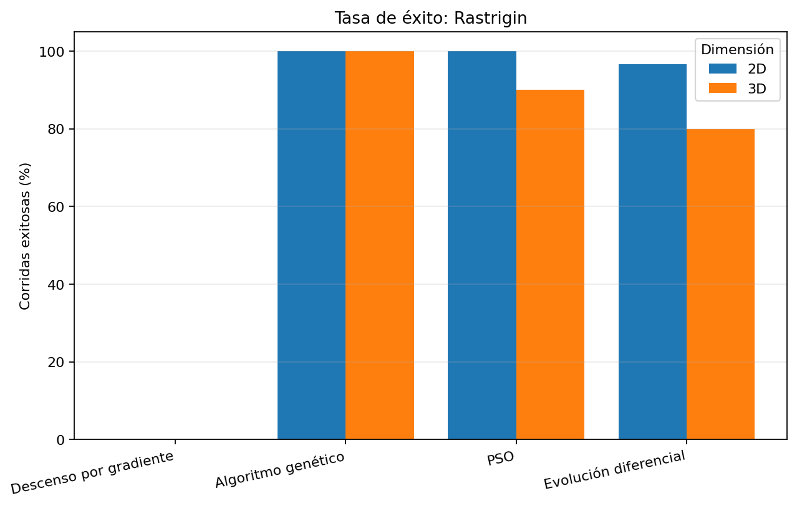
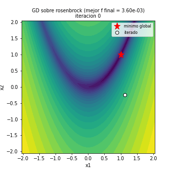
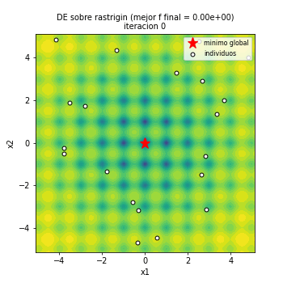

Parte 1. Optimización numérica: comparación de métodos
1. Objetivo
Comparar un método basado en gradiente con tres métodos metaheurísticos para minimizar dos funciones de prueba, Rosenbrock y Rastrigin, en dos y tres dimensiones. Se comparan el valor final de la función objetivo, la variabilidad entre corridas, la tasa de éxito y el número de evaluaciones utilizadas.
2. Funciones de prueba
2.1. Rosenbrock
Para un vector \(x\in\mathbb{R}^n\), se utiliza
\[f(x)=\sum_{i=1}^{n-1}\left[100(x_{i+1}-x_i^2)^2+(1-x_i)^2\right].\]
En esta implementación, cada coordenada está restringida al intervalo \([-2.048,2.048]\). El mínimo global es \(f(x)=0\), alcanzado en \(x=(1,\ldots,1)\). La función tiene un valle curvo y estrecho; por eso un método puede acercarse al valle sin avanzar fácilmente hacia el mínimo (Rosenbrock, 1960).
2.2. Rastrigin
La función usada es
\[f(x)=10n+\sum_{i=1}^{n}\left[x_i^2-10\cos(2\pi x_i)\right].\]
El dominio por coordenada es \([-5.12,5.12]\), y el mínimo global es \(f(x)=0\) en \(x=(0,\ldots,0)\). La función presenta numerosos mínimos locales, lo que dificulta que un método local encuentre el mínimo global. Su forma se usa habitualmente como función de referencia para comparar algoritmos de optimización global (Jamil & Yang, 2013).
En las dos funciones el objetivo es minimizar \(f(x)\), y el valor óptimo conocido es cero.
3. Métodos comparados
3.1. Descenso por gradiente (GD)
Se inicia desde un punto aleatorio dentro del dominio y se actualiza el vector mediante
\[x_{k+1}=x_k-\eta\nabla f(x_k),\]
donde \(\eta=0.001\) es la tasa de aprendizaje. El algoritmo termina si llega al presupuesto, si la norma del gradiente es menor que \(10^{-8}\) o si detecta valores no finitos. Los gradientes se calculan con las expresiones analíticas implementadas en src/funciones.py.
3.2. Algoritmo genético (GA)
Cada individuo es un vector real. Se conserva una élite de dos individuos, se seleccionan padres mediante torneo, se aplica cruce BLX-\(\alpha\) y mutación gaussiana, y se recortan los candidatos al dominio. Los parámetros principales son población de 40, torneo de 3, \(\alpha=0.5\), cruce con probabilidad 0.9 y desviación de mutación de 0.05 veces el ancho del dominio. La descripción sigue la estructura general de los algoritmos genéticos (Goldberg, 1989).
3.3. Optimización por enjambre de partículas (PSO)
Cada partícula mantiene una posición y velocidad. La velocidad combina inercia, atracción hacia su mejor posición personal y atracción hacia la mejor posición global:
\[v_i\leftarrow wv_i+c_1r_1(p_i-x_i)+c_2r_2(g-x_i),\qquad x_i\leftarrow x_i+v_i.\]
Se usa una población de 20, \(w=0.7298\), \(c_1=c_2=1.49618\) y límite de velocidad de la mitad del ancho del dominio. La idea de optimización por enjambre fue presentada por Kennedy y Eberhart (1995).
3.4. Evolución diferencial (DE)
Se usa la variante DE/rand/1/bin. Para cada individuo se construye un vector mutante
\[v_i=x_{r_1}+F(x_{r_2}-x_{r_3}),\]
con índices distintos, y luego se hace cruce binomial con el individuo actual. El candidato reemplaza al individuo si su valor objetivo es igual o mejor. Se usan población de 20, \(F=0.5\) y probabilidad de cruce \(CR=0.9\), siguiendo la propuesta de Storn y Price (1997).
4. Diseño experimental
- Funciones: Rosenbrock y Rastrigin.
- Dimensiones: 2 y 3.
- Métodos: GD, GA, PSO y DE.
- Corridas: 30 corridas independientes por combinación, para un total de \(2\times2\times4\times30=480\) corridas.
- Semilla base: 42. Las corridas independientes se derivan de esta semilla mediante
numpy.random.SeedSequence.
- Presupuesto: 40 000 evaluaciones equivalentes por corrida.
- Umbral de éxito: \(f(x)-f^*<10^{-4}\) para Rosenbrock y \(f(x)-f^*<10^{-3}\) para Rastrigin, donde \(f^*=0\).
Para comparar los métodos se reportan por separado las evaluaciones de la función \(n_f\) y las del gradiente \(n_{\nabla f}\). El proyecto usa el coste equivalente
\[N_{\mathrm{eq}}=n_f+c_{\nabla f}n_{\nabla f},\]
con \(c_{\nabla f}=2n\) cuando no se configura otro valor. Esto toma como referencia el coste de aproximar un gradiente mediante diferencias centrales. En este experimento los gradientes de GD son analíticos; por tanto, \(2n\) es una convención de comparación y no el número real de llamadas a la función objetivo para calcularlos.
Para cada combinación se calculan la media, desviación estándar muestral, mejor valor, peor valor, tasa de éxito y evaluaciones equivalentes medias. Las gráficas de distribución usan escala simétrica logarítmica (symlog) para que se puedan visualizar tanto valores muy pequeños como resultados alejados del óptimo.
5. Resultados estadísticos
La tabla resume las 16 combinaciones. La media, desviación, mejor y peor valor corresponden al valor final de la función objetivo. La tasa de éxito es el porcentaje de las 30 corridas que cumplió el umbral definido.
| Función |
Dim. |
Método |
Media |
Desv. estándar |
Mejor |
Peor |
Éxito |
Eval. eq. media |
| Rosenbrock | 2 | Descenso por gradiente | 2.150e-04 | 1.933e-04 | 3.261e-06 | 0.0011 | 16.7% | 4.000e+04 |
| Rosenbrock | 2 | Algoritmo genético (GA) | 1.051e-06 | 1.362e-06 | 3.942e-09 | 6.114e-06 | 100.0% | 3.998e+04 |
| Rosenbrock | 2 | Enjambre de partículas (PSO) | 0 | 0 | 0 | 0 | 100.0% | 4.000e+04 |
| Rosenbrock | 2 | Evolución diferencial (DE) | 0.0021 | 0.0068 | 0 | 0.0286 | 90.0% | 4.000e+04 |
| Rosenbrock | 3 | Descenso por gradiente | 3.537e+02 | 1.119e+03 | 5.122e-05 | 4.835e+03 | 3.3% | 3.600e+04 |
| Rosenbrock | 3 | Algoritmo genético (GA) | 3.024e-04 | 3.951e-04 | 2.782e-07 | 0.0014 | 46.7% | 3.998e+04 |
| Rosenbrock | 3 | Enjambre de partículas (PSO) | 5.251e-08 | 7.145e-08 | 6.807e-11 | 3.308e-07 | 100.0% | 4.000e+04 |
| Rosenbrock | 3 | Evolución diferencial (DE) | 0.1747 | 0.3113 | 0 | 1.3069 | 33.3% | 4.000e+04 |
| Rastrigin | 2 | Descenso por gradiente | 15.0238 | 8.8581 | 3.9798 | 33.8283 | 0.0% | 2.508e+02 |
| Rastrigin | 2 | Algoritmo genético (GA) | 6.898e-06 | 9.703e-06 | 2.174e-07 | 4.195e-05 | 100.0% | 3.998e+04 |
| Rastrigin | 2 | Enjambre de partículas (PSO) | 0 | 0 | 0 | 0 | 100.0% | 4.000e+04 |
| Rastrigin | 2 | Evolución diferencial (DE) | 0.0332 | 0.1817 | 0 | 0.995 | 96.7% | 4.000e+04 |
| Rastrigin | 3 | Descenso por gradiente | 29.7159 | 13.4346 | 9.9496 | 58.702 | 0.0% | 3.642e+02 |
| Rastrigin | 3 | Algoritmo genético (GA) | 3.246e-05 | 4.393e-05 | 1.926e-07 | 1.714e-04 | 100.0% | 3.998e+04 |
| Rastrigin | 3 | Enjambre de partículas (PSO) | 0.0995 | 0.3036 | 0 | 0.995 | 90.0% | 4.000e+04 |
| Rastrigin | 3 | Evolución diferencial (DE) | 0.1845 | 0.3855 | 0 | 1.0617 | 80.0% | 4.000e+04 |
5.1. Distribución de los resultados
Como los valores finales pueden variar varios órdenes de magnitud, las siguientes gráficas usan una escala symlog. Cada caja resume las 30 corridas independientes; los puntos que aparecen fuera de los bigotes son valores extremos según la regla del diagrama de caja.

Figura 1. Distribución de resultados para Rosenbrock en dos dimensiones. Fuente: elaboración propia a partir de corridas.csv.

Figura 2. Distribución de resultados para Rosenbrock en tres dimensiones. Fuente: elaboración propia a partir de corridas.csv.

Figura 3. Distribución de resultados para Rastrigin en dos dimensiones. Fuente: elaboración propia a partir de corridas.csv.

Figura 4. Distribución de resultados para Rastrigin en tres dimensiones. Fuente: elaboración propia a partir de corridas.csv.
5.2. Tasa de éxito
La tasa de éxito permite comparar cuántas corridas llegaron suficientemente cerca del óptimo, según los umbrales establecidos en el diseño experimental.

Figura 5. Tasa de éxito en Rosenbrock para las dos dimensiones. Fuente: elaboración propia a partir de resumen.csv.

Figura 6. Tasa de éxito en Rastrigin para las dos dimensiones. Fuente: elaboración propia a partir de resumen.csv.
6. Discusión
6.1. Rosenbrock
En dos dimensiones, GA y PSO alcanzaron el umbral de éxito en todas las corridas; DE lo alcanzó en el 90 %, mientras que GD lo hizo en el 16.7 %. Al pasar a tres dimensiones, PSO mantuvo un 100 % de éxito, pero GA bajó al 46.7 %, DE al 33.3 % y GD al 3.3 %. En esta configuración, el valle estrecho y curvo de Rosenbrock parece dificultar el avance del descenso por gradiente con paso fijo, especialmente al aumentar la dimensión.
La media de GD en tres dimensiones es alta y su desviación estándar también lo es, señal de que los resultados son muy variables. El hecho de que algunas corridas lleguen cerca del óptimo no implica que el método sea consistente en todas las inicializaciones.
6.2. Rastrigin
GD no alcanzó el umbral de éxito en ninguna corrida, ni en dos ni en tres dimensiones. Sus valores finales quedaron bastante por encima de cero, aunque el algoritmo a menudo terminó pronto porque la norma del gradiente se volvió pequeña. Esto muestra una limitación importante del criterio de parada: un gradiente pequeño no garantiza que se haya encontrado el mínimo global, especialmente en una función con muchos mínimos locales.
GA tuvo una tasa de éxito del 100 % en ambas dimensiones. PSO también alcanzó el 100 % en dos dimensiones, pero bajó al 90 % en tres. DE logró el 96.7 % en dos dimensiones y el 80 % en tres. Estos resultados son coherentes con la utilidad de los métodos poblacionales para explorar varias regiones del dominio, aunque no constituyen una garantía de que siempre encuentren el óptimo.
6.3. Evaluaciones y coste
La comparación debe considerar tanto el valor final como el número de evaluaciones. GD en Rastrigin consumió pocas evaluaciones porque se detuvo al detectar un gradiente pequeño, no porque hubiera alcanzado una solución satisfactoria. Por eso, un menor coste no debe interpretarse aisladamente como mejor rendimiento. GA, PSO y DE generalmente consumieron casi todo el presupuesto disponible, aunque algunas corridas alcanzaron el umbral antes; la columna evals_exito_mediana de resumen.csv permite estudiar cuántas evaluaciones equivalentes necesitaban las corridas exitosas.
Los costes equivalentes sirven para una comparación uniforme según la convención elegida. Como los gradientes usados por GD son analíticos, cambiar el coste asignado al gradiente puede cambiar la comparación presupuestaria; esta decisión debe quedar explícita al interpretar los resultados.
6.4. Animaciones del proceso
El repositorio incluye GIF de GD y DE en dos dimensiones para ambas funciones. Las animaciones muestran la trayectoria del punto (GD) o el movimiento de la población (DE) sobre las curvas de nivel. Se pueden regenerar con el comando principal del proyecto.

Figura 7. Trayectoria de descenso por gradiente sobre Rosenbrock en dos dimensiones. Fuente: ejecución propia del algoritmo con la semilla configurada.

Figura 8. Evolución de la población de DE sobre Rastrigin en dos dimensiones. Fuente: ejecución propia del algoritmo con la semilla configurada.
- resultados/gifs/rosenbrock_gd_seed42.gif
- resultados/gifs/rosenbrock_de_seed42.gif
- resultados/gifs/rastrigin_gd_seed42.gif
- resultados/gifs/rastrigin_de_seed42.gif
7. Limitaciones
- Solo se estudian dos funciones de prueba y dimensiones 2 y 3; los resultados no se deben generalizar a todos los problemas de optimización.
- El rendimiento depende de los hiperparámetros seleccionados. No se realizó una búsqueda sistemática de hiperparámetros.
- El umbral de éxito es una decisión experimental y afecta las tasas reportadas.
- La equivalencia de coste asigna \(2n\) evaluaciones a cada gradiente aunque el código usa gradientes analíticos; es una convención para el presupuesto y debe interpretarse como tal.
- Las figuras estadísticas se calculan a partir de los CSV de las corridas. Si se modifican los parámetros o la semilla, hay que volver a ejecutar el experimento y después generar las gráficas.
8. Conclusiones
En los experimentos realizados, los métodos poblacionales obtuvieron tasas de éxito más altas que GD en ambas funciones, con una ventaja marcada en Rastrigin. La diferencia fue especialmente clara para GD, que puede detenerse en puntos estacionarios que no son el mínimo global. En Rosenbrock, aumentar la dimensión también redujo el éxito de GA y DE, mientras PSO mantuvo resultados consistentes en esta configuración.
No hay un método universalmente superior a partir de estos experimentos: la comparación depende de la función, dimensión, inicialización, hiperparámetros, presupuesto y criterio de éxito. Para una evaluación justa conviene leer en conjunto el valor objetivo, la dispersión entre corridas, la tasa de éxito y las evaluaciones consumidas.
Referencias
Goldberg, D. E. (1989). Genetic algorithms in search, optimization, and machine learning. Addison-Wesley.
Jamil, M., & Yang, X.-S. (2013). A literature survey of benchmark functions for global optimisation problems. International Journal of Mathematical Modelling and Numerical Optimisation, 4(2), 150–194. https://doi.org/10.1504/IJMMNO.2013.055204
Kennedy, J., & Eberhart, R. (1995). Particle swarm optimization. In Proceedings of ICNN'95—International Conference on Neural Networks (Vol. 4, pp. 1942–1948). IEEE. https://doi.org/10.1109/ICNN.1995.488968
Rosenbrock, H. H. (1960). An automatic method for finding the greatest or least value of a function. The Computer Journal, 3(3), 175–184. https://doi.org/10.1093/comjnl/3.3.175
Storn, R., & Price, K. (1997). Differential evolution—A simple and efficient heuristic for global optimization over continuous spaces. Journal of Global Optimization, 11(4), 341–359. https://doi.org/10.1023/A:1008202821328
1. Objetivo del Problema Combinatorio
El objetivo es resolver el Problema del Viajante de Comercio (TSP) recorriendo las 47 capitales de la España peninsular en un circuito cerrado, minimizando el costo total del viaje. Para ello, se contrastan dos enfoques bioinspirados: Colonia de Hormigas (ACO) y un Algoritmo Genético (GA).
2. Formulación Matemática y Parámetros del Mundo Real
2.1. Ecuación de Costo del Viaje
El costo total \( C_{ij} \) de transitar entre la ciudad \( i \) y la ciudad \( j \) se modeló incorporando tres factores reales:
\[ C_{ij} = (D_{ij} \times C_{km}) + (T_{ij} \times S_{hora}) + P_{ij} \]
- \( D_{ij} \): Distancia en kilómetros entre ciudades (Extraída mediante API OSRM).
- \( C_{km} \): Costo operativo por kilómetro. Definido en 0.072 €/km.
- \( T_{ij} \): Tiempo de recorrido en horas (Extraído mediante API OSRM).
- \( S_{hora} \): Valor del tiempo del vendedor. Base de 10.6 €/h.
- \( P_{ij} \): Costo de peajes en euros.
2.2. Justificación de los Datos
- Vehículo: Renault Clio Esprit Alpine (motor Full-hybrid). Consumo homologado de 3.9 L/100km. Fuente: Renault España (Oct 2026).
- Combustible: Precio de gasolina 95 sin plomo promediado en 1.84 €/L. Fuente: dieselogasolina.com (Oct 2026).
- Peajes: Lista depurada de autopistas de peaje administradas por el Estado (ej. AP-68, AP-9). Fuente: Ministerio de Transportes y Movilidad Sostenible (Oct 2026).
- Sueldo del Vendedor: Promedio del mercado español para operarios de ruta: 10.6 €/hora. Fuente: Indeed España (Oct 2026).
3. Algoritmos Bioinspirados Implementados
3.1. Colonia de Hormigas (ACO)
El algoritmo ACO construye rutas estocásticamente usando la regla de transición:
\[ p_{ij}^k = \frac{[\tau_{ij}]^\alpha [\eta_{ij}]^\beta}{\sum_{l \in N_i^k} [\tau_{il}]^\alpha [\eta_{il}]^\beta} \]
Donde \( \tau_{ij} \) es el rastro de feromona y \( \eta_{ij} \) es la información heurística (inversa del costo \( 1/C_{ij} \)). Las feromonas se evaporan a una tasa \( \rho = 0.1 \) y se actualizan sumando \( Q/L_k \) (donde \( L_k \) es el costo de la ruta de la hormiga \( k \)). Se configuró \( \alpha=1.0 \) y \( \beta=2.0 \) para dar alta prioridad a los tramos locales económicos.
3.2. Algoritmo Genético (GA)
Cada individuo es una permutación de 47 enteros. Debido a la naturaleza combinatoria, se aplicó un Cruce de Orden (Order Crossover - OX) para preservar los subciclos sin duplicar ciudades. La mutación se realizó mediante la inversión de subsecuencias, lo cual es matemáticamente ideal para desatar rutas cruzadas en el TSP. La población se fijó en 150 individuos con un 25% de probabilidad de mutación.
4. Resultados y Análisis
4.1. Visualización del Recorrido (Mapa de España)
A continuación se presenta la evolución de la mejor solución obtenida por la Colonia de Hormigas, proyectada sobre el mapa topológico (determinado por las coordenadas de las propias ciudades):

Figura 1. Evolución iterativa del recorrido cerrado óptimo por España (ACO).
4.1. Análisis Visual de Convergencia (Colonia de Hormigas)
A continuación se muestran tres instantes clave extraídos del GIF de la evolución del algoritmo ACO. Esto evidencia el comportamiento exploratorio y explotatorio de la colonia.

Figura 1a. Estado Inicial (Iteración 0).
Análisis Inicial: Al inicio del algoritmo, los niveles de feromona \( \tau_{ij} \) son equitativos en toda la matriz. Esto provoca que la toma de decisiones probabilística dependa casi exclusivamente de la heurística local (avaricia por elegir el vecino más cercano), resultando en una ruta caótica, altamente ineficiente, llena de autointersecciones y trayectos muy costosos de lado a lado del país.

Figura 1b. Estado Medio (Iteración 50).
Análisis Medio (Convergencia en proceso): Gracias al depósito proporcional de feromonas \( \Delta \tau_{ij} = Q / L \), las aristas (caminos) que han formado parte de rutas con un costo global menor comienzan a dominar la probabilidad de transición. La evaporación \( \rho \) ha limpiado los "errores" del inicio. Visualmente, el algoritmo ya descubrió el circuito exterior de la costa de la península, pero sigue dudando en las rutas centrales (cerca de Madrid y las Castillas), generando aún pequeños cruces.

Figura 1c. Estado Final y Ruta Óptima (Iteración 100).
Análisis de Ruta Óptima: La colonia ha convergido. Las feromonas se han cristalizado en una ruta altamente depurada donde ya no existen cruces. El algoritmo no solo minimizó la distancia bruta, sino que la figura demuestra cómo las hormigas integraron inteligentemente el costo del combustible, evitando vías excesivamente caras, consolidando un "anillo" natural alrededor de España con mínimas ineficiencias internas.
4.2. Análisis de Sensibilidad: El valor del tiempo
Se corrió el experimento variando el costo de la hora del vendedor desde 5 €/h hasta 40 €/h para observar el punto de quiebre donde el algoritmo decide pagar peajes caros con tal de ahorrar horas al volante.

Figura 2. Curvas de sensibilidad. La línea azul discontinua representa la cantidad de dinero gastada en peajes para cada valor del tiempo.
Discusión: A un costo de 5 €/h, el tiempo del vendedor es "barato", por lo que el algoritmo traza rutas por vías nacionales lentas para esquivar peajes (gasto en peajes casi nulo). Sin embargo, al cruzar el umbral de los 15-20 €/h, la gráfica azul muestra un aumento abrupto. El costo del tiempo se vuelve tan prohibitivo que al algoritmo le sale más económico transitar por autopistas de pago (como la AP-68 de Bilbao a Zaragoza), incrementando el gasto en peajes para minimizar las horas globales de conducción.